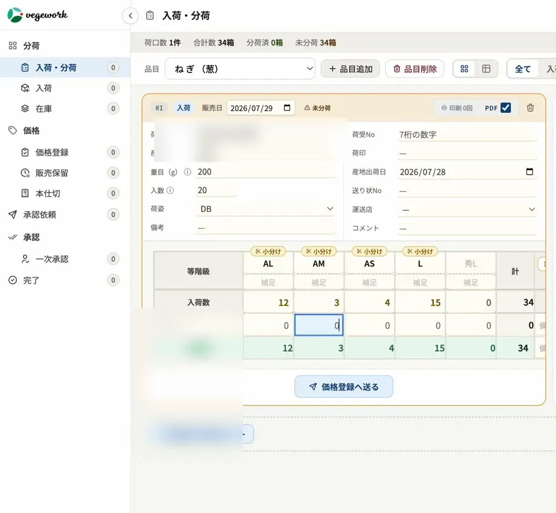

FEATURE
青果市場の荷受（入荷）システム
― 入荷の登録から分荷へ
荷受は、産地から届いた荷を受け入れて記録する業務で、青果卸売市場の一日の始まりです。本ページでは、荷受の業務と現場の課題、システムにするときのポイント、そしてベジワークの営業管理システム「vegework」の荷受（入荷）の画面でできることを紹介します。
01荷受とは
荷受とは、産地（荷主）から届いた荷を、品目・産地・等階級・入数・量目・荷姿などとともに受け入れ、記録する業務です。ここで記録した内容が、そのあとの分荷・価格登録・仕切・帳票のすべての元になります。
荷受の正確さと早さは、市場の一日の段取りを左右します。入荷の記録が遅れれば分荷が遅れ、記録に誤りがあれば、仕切や請求まで誤りが伝わってしまいます。
02荷受の現場の課題
- 送り状を見ながらの手入力。産地から届いた送り状の内容を一つずつ打ち込むのは、時間がかかるうえに入力の誤りも起きます。
- 似た入荷を毎回一から入れる手間。同じ産地から同じような構成の荷が毎日届くのに、そのたびに一から入力していることも少なくありません。
- 未処理の入荷の見落とし。入荷したまま分荷や価格登録に進んでいない荷が、紙や Excel では見えにくくなります。
- 販売管理システムの決まりとの食い違い。荷姿の文字数や荷受番号の付け方など、販売管理システムの入力の決まりに合っていないと、経理が入力するときに直す手間が生まれます。
03荷受をシステムにするときのポイント
- 入力が速いか。早朝の限られた時間に使うものです。前の入荷を使い回せるかどうかで、手間は大きく変わります。
- 出荷データを取り込めるか。産地からの出荷データを取り込めれば、手入力そのものが減ります。
- 未処理の入荷が見えるか。まだ次の工程へ進んでいない入荷がひと目でわかると、見落としを防げます。
- 販売管理システムの決まりに合わせられるか。入力の段階で決まりに合った形に整えておけば、経理の手間がなくなります。
- そのまま分荷へ進めるか。入れた入荷から、画面を移らずに分荷へ進めると、段取りが途切れません。
04vegework の荷受の画面でできること

- 品目を選ぶと、入荷のカードができる。品目を選ぶと入荷のカードが作られ、荷主・産地・等階級・入数・量目・荷姿などを入れられます。入れたカードから、そのまま分荷へ進めます。
- 過去の入荷をコピー。以前の入荷の組み立てをひな型としてコピーできるため、似た入荷が続くときの入力が速くなります。
- 出荷データの取り込み。産地からの出荷データを取り込んで、入荷を作れます（取り込み元は市場によって異なります）。
- 未処理の入荷を一覧で。入荷は価格登録へ送るまで入荷一覧に残り、産地出荷日の古い順に並びます。担当者ごとに自分の入荷が表示されるので、処理漏れを防げます。
- 販売管理システムの決まりに合わせて自動で整える。荷姿の文字の種類や文字数など、販売管理システムの入力の決まりに合わせて自動で直します。荷受番号も、販売管理システムと同じ「コード＋枝番」の数え方で扱います。
- 品目の結び付けを確認。品目マスタと結び付いていない入荷には確認を出し、手数料の計算漏れを防ぎます。
- 残った荷は在庫として引き継ぎ。その日に分荷しきれなかった分は、在庫として翌日以降へ引き継がれます。
- 荷主の送り状との照合。荷受担当が荷主の送り状と照らし合わせて確定する仕組みに、順次対応しています。
荷受のあとの流れは、分荷・価格登録・仕切・帳票の各ページ、業務全体の流れは青果市場システムとは？のページで紹介しています。
05導入の進め方
荷受の流れや送り状の形、荷受番号の付け方は、市場ごとに違います。vegework の導入では、ヒアリングと視察で今のやり方を確かめたうえで、貴社のルールに合わせて設定・開発します。紙や Excel で運用している場合も、業務ごとに段階的に移していけます。
06よくある質問
Q. 産地の出荷データを取り込めますか？
はい。産地からの出荷データを取り込んで入荷を作れます。取り込み元やデータの形は市場によって異なるため、導入の際に伺って合わせます。
Q. 前日と同じような入荷を、毎回入れ直す必要がありますか？
いいえ。過去の入荷の組み立てをひな型としてコピーできるため、似た入荷が続くときは入力の手間を大きく減らせます。
Q. 販売管理システムの入力の決まりに合わせられますか？
はい。荷姿の文字の種類や文字数などを、販売管理システムの決まりに合わせて自動で整えます。荷受番号も同じ数え方で扱います。
Q. 入れ忘れや処理漏れを防げますか？
入荷は価格登録へ送るまで入荷一覧に残り、担当者ごとに表示されます。未処理の入荷がひと目でわかるので、処理漏れを防げます。
荷受のシステム化や、今の送り状・荷受の流れに合うかどうかのご相談も承っています。お気軽にお問い合わせください。
資料請求・お問い合わせはこちら →